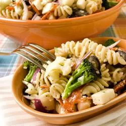

Pasta Salad

Description
This tri-colored pasta salad with broccoli, cauliflower, pepperoni,
cheese, and spices is out of this world. Great to take to a BBQ on those
warm summer nights. This salad tastes wonderful right after you make it
but is best served the day after.
Ingredients
- 1 (16 ounce) package uncooked tri-colored spiral pasta
- 1 head fresh broccoli, cut into bite size pieces
- 1 head fresh cauliflower, chopped into bite size pieces
- 1 red onion, chopped
- 2 teaspoons minced garlic
- 8 ounces pepperoni slices, cut into quarters
- 1 (8 ounce) package mozzarella cheese, cut into cubes
- 1 (6 ounce) can large pitted black olives, drained and sliced
- ½ cup olive oil, or to taste
- ½ cup red wine vinegar, or to taste
- salt and pepper to taste
- Italian seasoning to taste
Steps
-
Bring a large pot of lightly salted water to a boil. Place pasta in the
pot; cook until al dente, 8 to 10 minutes. Drain and transfer to a bowl.
Cover and chill in the refrigerator for 1 hour.
-
Toss chilled pasta with broccoli, cauliflower, red onion, garlic,
pepperoni, mozzarella cheese, olives, olive oil, and red wine vinegar.
Season with salt, pepper, and Italian seasoning. Chill in the
refrigerator until serving.